Construction of Electrostatic Type Instruments
Force & Torque Equation of Electrostatic Type Instrument
Advantages of Electrostatic Type Instruments
Disadvantages of Electrostatic Type Instruments
Working Principle of Electrostatic Type Instruments
As the name suggests the electrostatic type instrument use static electrical field to produce the deflecting torque. These types of instrument are generally used for the measurement of high voltages but in some cases they can be used in measuring the lower voltages and powers of a given circuit. Now there are two possible ways in which the electrostatic force can act. The two possible conditions are written below,
Construction of Electrostatic Type Instruments
(a) When one of the plates is fixed and other plate is free to move, plates are oppositely charged in order to have attractive force between them. Now due this attractive force movable plate will move towards the stationary or fixed plate till the moving plate stored maximum electrostatic energy.
(b) In other arrangement there may be force of attraction or repulsion or both, due to some rotary of plate.
Force & Torque Equation of Electrostatic Type Instrument
Now let us derive force equation for the linear electrostatic type instruments. Let us consider two plates as shown in the diagram given below.
Linear Electrostatic Instrument
Plate A is positively charged and plate B is negatively charged. As mentioned above as per the possible condition (a) we have linear motion between the plates. The plate A is fixed and plate B is free to move. Let us assume there exists some force F between the two plates at equilibrium when electrostatic force becomes equal to spring force. At this point, the electrostatic energy stored in the plates is
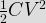
Now suppose we increase the applied voltage by an amount dV, due to this the plate B moves towards the plate A by a distance dx. The work done against the spring force due to displacement of the plate B be F.dx. The applied voltage is related to electric current as
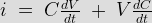
From this value of electric current the input energy can be calculated as
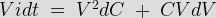
From this we can calculate the change in the stored energy and that comes out to be
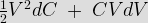
By neglecting the higher order terms that appears in the expression. Now applying the principle of energy conservation we have input energy to the system = increase in the stored energy of the system + mechanical work done by the system. From this we can write,
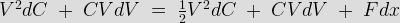
From the above equation the force can be calculated as
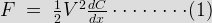
Now let us derive force and torque equation for the rotary electrostatic type instruments. Diagram is shown below,
Rotary Type Electrostatic Instruments
In order to find out the expression for deflecting torque in case of rotary type electrostatic instruments, just replace the in the equation (1) F by Td and dx by dA. Now rewriting the modified equation we have deflecting torque is equals to
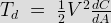
Now at steady state we have controlling torque is given by the expression Tc = K*A. The deflection A can be written as
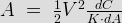
From this expression we conclude that the deflection of the pointer is directly proportional to the square of the voltage to be measured hence the scale will be non uniform. Let us now discuss about Quadrant electrometer. This instrument is generally used in measuring the voltage ranging from 100V to 20 kilo volts. Again the deflecting torque obtained in the Quadrant electrometer is directly proportional to the square of the applied voltage; one advantage of this is that this instrument can used to measure both the ac and dc voltages. One advantage of using the electrostatic type instruments as voltmeters is that we can extend the range of voltage to be measured. Now there are two ways of extending the range of this instrument. We will discuss them one by one.
(a) By using resistance potential dividers: Given below is the circuit diagram of this type of configuration.
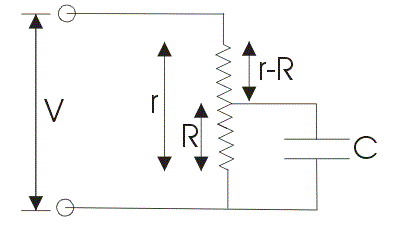The voltage which we want to measure is applied across the total resistance r and the electrostatic capacitor is connected across the portion of the total resistance which is marked as r. Now suppose the applied voltage is dc, then we should make one assumption that the capacitor which is connected is having infinite leakage resistance. In this case the multiplying factor is given by the ratio of electrical resistance r/R. The ac operation on this circuit can also be analyzed easily again in case of ac operation we multiplying factor equal to r/R.
(b) By using capacitor multiplier technique: We can increase the range of voltage to be measured by placing a series of capacitors as shown in the given circuit.
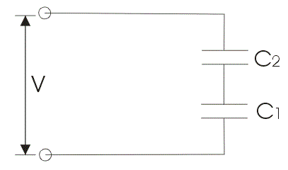
Let us derive the expression for multiplying factor for the circuit diagram 1. Let us mark the capacitance of the voltmeter be C1 and series capacitor be C2 as shown in the given circuit diagram. Now the series combination of these capacitor be equal to
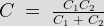
Which is the total capacitance of the circuit. Now the impedance of the voltmeter is equal to Z1 = 1/jωC1 and thus total impedance will be equal to
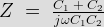
Now the multiplying factor can be defined as the ratio of Z/Z1 which is equal to 1 + C2 / C1. Similarly the multiplying factor can also be calculated. Hence by this way we can increase the range of voltage to be measure.
Advantages of Electrostatic Type Instruments
Now let us look at some advantages of electrostatic type instruments.
(a) The first and the most important advantage is that we can measure both ac and dc voltage and the reason is very obvious the deflecting torque is directly proportional to the square of the voltage.
(b) Power consumption is quite low in these types of instruments as the electric current drawn by these instruments is quite low.
(c) We can measure high value of voltage.
Disadvantages of Electrostatic Type Instruments
Instead of various advantages, electrostatic instruments posses few disadvantages and these are written below.
(a) These are quite costly as compared to other instruments and also these have large size.
(b) The scale is not uniform.
(c) The various operating forces involved are small in magnitude.
 by
by